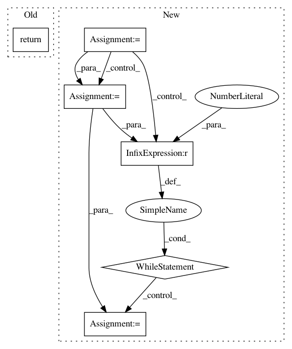

66584dea87782aed5509e4269a9f015002e1f5c1,pytext/torchscript/module.py,PyTextEmbeddingModuleWithDense,forward,#PyTextEmbeddingModuleWithDense#,1232
Before Change
sentence_embedding = self._forward(inputs, dense_tensor)
if self.concat_dense:
return torch.cat([sentence_embedding, dense_tensor], 1)
else:
return sentence_embedding
@torch.jit.script_method
After Change
result = self.forward_impl(texts[:max_batch], dense_feat[:max_batch])
if input_len > max_batch:
texts = texts[max_batch:]
dense_feat = dense_feat[max_batch:]
while len(texts) > 0:
result_extension = self.forward_impl(
texts[:max_batch], dense_feat[:max_batch]
)
// the result of forward is either a torch.Tensor or a List[Any]
if isinstance(result, torch.Tensor):
result = torch.cat([result, result_extension], dim=0)
else:
result.extend(result_extension)
texts = texts[max_batch:]
dense_feat = dense_feat[max_batch:]
return result
@torch.jit.script_method
def make_prediction(
In pattern: SUPERPATTERN
Frequency: 3
Non-data size: 6
Instances
Project Name: facebookresearch/pytext
Commit Name: 66584dea87782aed5509e4269a9f015002e1f5c1
Time: 2021-02-23
Author: mikekg@fb.com
File Name: pytext/torchscript/module.py
Class Name: PyTextEmbeddingModuleWithDense
Method Name: forward
Project Name: facebookresearch/pytext
Commit Name: 66584dea87782aed5509e4269a9f015002e1f5c1
Time: 2021-02-23
Author: mikekg@fb.com
File Name: pytext/torchscript/module.py
Class Name: PyTextEmbeddingModule
Method Name: forward
Project Name: UFAL-DSG/tgen
Commit Name: fb50688c503567c5db6207e45e2c5e2ee1ad33df
Time: 2014-08-25
Author: odusek@ufal.mff.cuni.cz
File Name: tgen/features.py
Class Name:
Method Name: depth